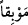

şeyleri çağırın! buyurur. Çağırmışlardır onları; fakat kendilerine cevap
vermemişlerdir. Biz onların arasına tehlikeli bir uçurum koyduk.
“O gün” yâni kıyâmet gününde Allah Teâlâ, azarlayarak ve âciz bırakarak kâfirlere
şöyle buyurur. Bazıları, âyette ki Allah’ın hitabını, “meleklerinin lisanıyla der” diye
açıklamışlardır. Fakir (Bursevî) der ki: Daha âşikâr olan Allah’ın bizzat buyurması
şeklindeki birinci görüştür. Çünkü kıyâmet günü Allah Teâlâ mü’min ve kâfir bütün
insanlara farklı sûretlerde tecellî edeceği ve herkes O’nu dünyadaki inancına uygun
olarak göreceği sâbittir.[190] Şu halde Cenâb-ı Hakk’ın kıyâmet günü kâfirlerle
konuşması da uzak bir ihtimal değildir. Çünkü O’nun kâfirlerle konuşması, hoşnutluğu
ile ve onları şereflendirmek için değil azarlamak ve ayıplamak için olacaktır. Tıpkı
Hicr sûresinde ve benzeri âyetlerde geçtiği üzere lânetleyip huzurundan kovduktan
sonra İblis’le konuşması gibi.
“Benim ortaklarım olduklarını ileri sürdüğünüz şeyleri” Allah’tan başka kulluk
edilen her şeyi “çağırın!” Sizin şefaatçileriniz olduklarını iddiâ ettiğiniz şeyleri çağırın
da size şefaat etsinler. Sizi, azâbımdan kurtarsınlar “buyurur.” Onlar dünyada iken
putların Allah’a ortak olduğunu iddiâ etmişlerdi. İşte buna binâen Cenâb-ı Hak
müşriklerin başına kakmak ve azarlamak üzere “ortaklarım” buyurmuştur.
Yardım etmeleri için “çağırmışlardır onları.” Onları nasıl çağırdıkları başka bir
âyette şöyle zikredilmiştir: “Biz sizin tâbilerinizdik. Şimdi siz, Allah’ın azâbından
herhangi bir şeyi bizden savabilir misiniz?” (İbrâhim, 14/21)
“Fakat kendilerine cevap vermemişlerdir.” Ne onlardan bir zararı giderebilmişler ne
de onlara bir fayda ulaştırabilmişlerdir. Çünkü buna imkan yoktur. Ancak bu durum
onların sûreten ve sözlü olarak çağrıya icâbet etmelerine ters düşmez. Nitekim Cenâb-ı
Hak putların lisanından onların şöyle dediklerini nakleder: “Zâten onlar bize
tapmıyorlardı, derler.” (el-Kasas, 28/63)
Burada şu husûsa işaret vardır: Cenâb-ı Hakk’ın emirlerine uymak ve yasaklarından
sakınmak, dünyada ölümden önce olursa kişiye fayda verir. Âhirette de semeresini
görür. Ancak âhiretteki inanmanın ve amelin kişiye bir faydası olmaz. Allah’ın
müşriklere hitaben; “Benim ortaklarım olduklarını ileri sürdüğünüz şeyleri çağırın”
buyurması bir emirdir. Müşrikler de Allah’a ortak koştukları şeyleri çağırarak, bu emre
imtisâl etmişlerdir. Lâkin bu ilâhî emre (âhirette) uymaları kendilerine bir fayda
sağlamaz. Çünkü ortak koştukları şeyler “kendilerine cevap vermemişlerdir. Biz
onların arasına” çağıranlarla çağrılanlar arasına “tehlikeli bir uçurum koyduk.”
“__WORD__ Mevbikan (tehlikeli uçurum)”dan murad cehennem ateşidir ya da düşmanlıktır
ki o şiddet açısından helâkin ta kendisidir.
Ferrâ şöyle der: “Dünyadaki beraberliğinizi âhirette helâk hâline getiririz.” Bu
görüşe göre âyette ‘onların arasında’ bulunan şey ‘beraberlik’ olmuş olur. Nitekim
Allah: “Andolsun, aranız açılmış ve (ilâh) sandığınız şeyler sizden kaybolup
gitmiştir” (el-En‘âm, 6/94) buyurmuştur.